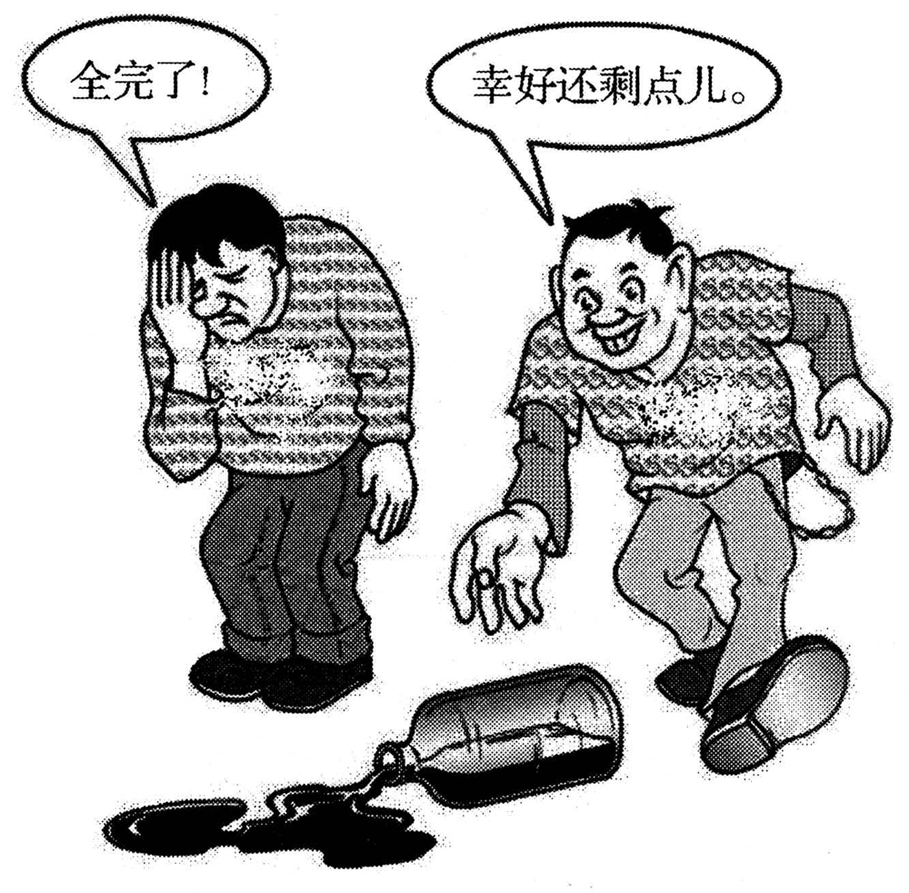

A小作文 · 以学生会名义给国际学生的欢迎邮件（10 分）
Some international students are coming to your university. Write them an email in the name of the Students’ Union to
1) extend your welcome and
2) provide some suggestions for their campus life here.
You should write about 100 words on ANSWER SHEET 2.
Do not sign your own name at the end of the letter. Use “Li Ming” instead.
Do not write the address. (10 points)
💭 审题三件事
- ⭐⭐ 是谁在说话？题干说 in the name of the Students’ Union——说话的是一个组织，执笔的是 Li Ming。⟹ 第一句就交代身份（On behalf of the Students’ Union, I …），之后改用 we（our volunteers / we look forward to …）。通篇 I think、I hope，读着像李明个人来信；一个 we 都没有，「以学生会名义」这个要求就没兑现。
- ⭐⭐ 读者缺什么？读者是刚到的外国学生——他们不缺「要努力学习」的道理，缺的是本地信息：报到那天找谁、怎么认识中国同学、社团什么时候招新、遇到事给谁写信。⟹ 判据与 2010 那道通知同源：读者不知道就没法行动的，才值得写进建议。每条建议写成「一个动作 ＋ 一个名字 ＋ 一个好处」。
- ⭐ 客人，不是学生手册的读者。这是一封欢迎信：建议要用建议的语气（join … / do not miss … / it is a good idea to …），不写 You must obey …（居高临下，语域错）；也不写中国五千年、本校百年校史——那是在介绍自己，不是在帮对方过日子，100 词装不下。
⭐⭐ 六年 Part A 六种体裁（第六年仍不重样）
| 年份 | 体裁 | 读者是谁 | 第一句怎么起 | 落款 | 本年特有的坑 |
|---|---|---|---|---|---|
| 2007 | 建议信 | 校图书馆（机构） | I am writing to put forward several suggestions … | Li Ming | 建议只有口号没有可执行动作；写成投诉信 |
| 2008 | 道歉信 | 具名熟人 Bob | I am writing to apologize for … | Li Ming | 只道歉不给方案；方案没有「动作＋方式＋时间」 |
| 2009 | 致编辑信 | 报社编辑 | I am writing to express my concern about … | Li Ming | 建议里没有一条是编辑自己能办的 |
| 2010 | 通知 NOTICE | 一群人（无称呼） | Volunteers are needed for … | 机构名 | 写 Dear ＝ 体裁错；落款签 Li Ming |
| 2011 | 推荐信 | 未具名的朋友 （名字自己起） | How have you been? I am writing to recommend … | Li Ming | 写成影评／剧透结局；通篇只有「我」没有「你」 |
| 2012 本题 | 欢迎邮件 （以组织名义） | 一群人（国际学生） 但仍是书信 | On behalf of the Students’ Union, I would like to extend a warm welcome to … | Li Ming ＋ Students’ Union | ⭐ 按 2010 的手感写成通知（无称呼）；通篇 I 没有 we；建议放之四海皆准（丢了 here）；Welcome you to … |
- ⭐⭐ 2011 页写的是「押三问」：读者几个人 / 题干给没给名字 / Do not sign 后面跟什么。2012 把第一问拆开了：读者人数不决定体裁——2010 与 2012 都写给一群人，一个是通知、一个是邮件。决定体裁的是 Directions 里那个名词（letter / email / notice）。
- ⟹ 四问（20 秒答完，格式分锁死）：① 体裁词是什么？（letter / email ⟹ 有 Dear；notice ⟹ 无称呼）② 读者是谁、几个人？（定 Dear 后面写什么、定语域）③ 以谁的名义？（in the name of / on behalf of ⟹ 正文用 we、落款补一行机构）④ Do not sign 后面给了什么？（定落款第一行）。
- ⭐ 「同题型连续六年不重样」三条线都续上了：翻译六年六种丢分机制（2012 语篇）· 完形六年六种考点分布（2012 语境 8 空最多）· Part A 六年六种体裁。⟹ 不押考法，只把每一种打法练熟。
- 📎 另：2012 与 2022 都是 email，却是语域的两极——2022 写给一位英国教授（正式、Dear Professor …、不用缩写），2012 写给一群同龄新生（热情、复数称呼、可以有一个感叹号）。email 只是载体，语域看读者。
⚠️ Directions 限定词清算表（开考先圈出来）
小作文 10 分，丢分很少丢在语言上，多半丢在没看见 Directions 里的限定词。本题八个限定词里有三个管的是「身份」（email / them / in the name of）——这是往年少见的。
| 限定词 | 它约束什么 | 违反的后果 |
|---|---|---|
| an email … the end of the letter | 体裁＝书信格式：称呼 ＋ 正文 ＋ 结尾敬语 ＋ 落款。Directions 自己把 email 和 letter 混着叫，说明考场上的 email 就是按信写 | ⚠️ 按 2010 的手感写成 NOTICE（标题居中、无 Dear、落款机构名）＝体裁错，语言再好也上不了一档 |
| Some international students … Write them | 读者＝一群外国学生（them 复数） | Dear Sir or Madam（读者是学生不是机构）；Dear international student（单数，只写给了一个人） |
| in the name of the Students’ Union | 说话的是组织 ⟹ 首句交代 on behalf of，正文用 we | 通篇 I think / I hope ＝ 像个人来信；或者从头到尾不说自己是谁，读者不知道这封信从哪儿来 |
| extend your welcome | 要点一；extend 是正式动词 | ❌ Welcome you to our university（缺主语的中式英语）；只写一句 Welcome! 就转建议＝要点一单薄 |
| provide some suggestions | 要点二；至少两条 | 只给一条＝要点不全；列五六条、每条半句＝一条都没说透 |
| for their campus life here | 范围＝校园生活（不只学习）· here＝本校才有的具体东西 | study hard / obey the rules / enjoy yourselves——放之四海皆准，等于没写 here |
| about 100 words | 95–115 最稳 | 低于 80 按档扣；超过 130 挤占大作文时间 |
| Do not sign … Use “Li Ming” instead Do not write the address | 落款第一行＝Li Ming（第二行可补 Students’ Union）；不写地址（email 也不写邮箱地址） | 只落款 Students’ Union ＝ 违反明令；签真名有判零风险；写 Subject / 日期 / 邮箱不加分，还白占字数 |
🧩 建议怎么挑：只挑「他们不知道、而我们知道」的（本页新增）
「建议写得空」几乎从来不是英语不够，而是挑错了东西——挑了读者本来就知道的。照下表问一句「一个刚落地的外国学生知道这个吗？」，答案是「不知道」的才写。
| 类别 | 为什么外国新生不知道 | 写成「动作 ＋ 名字 ＋ 好处」 | 别写成 |
|---|---|---|---|
| 落地 （报到当天） | 第一天最慌；信息多半贴在中文通知里 | Our volunteers will be waiting at the main gate on arrival day to help you settle in. （放进欢迎段，当作「迎」的那个动作） | We hope you will adapt to life here soon.（空） |
| 语言 ＋ 朋友 | 课堂教不了日常中文；自己也很难走进本地学生的圈子 | join our Language Partner Programme, which pairs you with a Chinese student: you practise Chinese, and you make a friend. | Learn Chinese hard.（口号，没有抓手） |
| 融入 | 不知道社团集中在哪一周招新，错过就要等一年 | visit the clubs fair in the second week, the quickest way to meet people who share your interests. | Take part in more activities.（没时间、没名字） |
| 求助通道 | 遇到事不知道该找谁 | Whatever comes up, … just reply to this email. （email 自带回复通道，一句话给足） | If you have any problems, please contact us.（没说怎么联系） |
- 两条写透，胜过五条列名。题干是 some suggestions，两条即合格；每条都要有「名字」（Language Partner Programme、clubs fair）——一个具体名字就是一个 here。
- ⭐ 「欢迎」也要落到一个动作上。光写 Welcome! 是一个形容词；「志愿者报到当天在正门等你们」是一个动作——它让要点一有了内容，还顺手当了第一条最实用的信息。
✍️ 范文（ 词 · 🟡 亮点点击看讲解）
Dear international students,
身份 ＋ 欢迎On behalf of the Students’ Union, I would like to extend a warm welcome to all of you. Our volunteers will be waiting at the main gate on arrival day to help you settle in.
建议 × 2Here are two suggestions for your campus life. First, join our Language Partner Programme, which pairs you with a Chinese student: you practise Chinese, and you make a friend. Second, visit the clubs fair in the second week, the quickest way to meet people who share your interests.
通道 ＋ 期待Whatever comes up, from a lost card to a homesick evening, just reply to this email. We look forward to meeting you!
Yours sincerely,
Li Ming
Students’ Union
我谨代表学生会，向你们每一位致以热烈的欢迎。报到当天，我们的志愿者会在学校正门等你们，帮你们安顿下来。
关于校园生活，给你们两条建议。第一，加入我们的「语伴计划」，它会为你配一位中国同学——你练了中文，也交了朋友。第二，别错过第二周的社团招新会，那是认识志趣相投的人最快的途径。
无论遇到什么事，从丢了校园卡到想家的夜晚，直接回复这封邮件就行。期待与你们见面！
此致
李明
学生会
- ⭐⭐ 格式写成了通知：顶上一个 NOTICE、没有 Dear、落款学生会——这是把 2010 的手感搬到了 2012。本年 Directions 第一句写 email、末句写 letter，两处都在告诉你这是一封信。
- ⭐ 人称以学生会名义，却通篇是「我」：I hope you … / I think you should …。第一句交代 On behalf of …, I …，之后一律 we / our。反过来，落款只写 Students’ Union、不写 Li Ming，又违反了 Use “Li Ming” instead 的明令。
- ⭐ 语言「欢迎」的三种写法两种是错的：❌ Welcome you to our university!（缺主语的中式英语）· ❌ You are welcome to our university.（You are welcome ＝「不客气」或「随时欢迎你来做某事」，不是「欢迎你到来」）⟹ ✅ Welcome to our university! ／ We warmly welcome you to … ／ extend a warm welcome to you。
- 内容建议放之四海皆准：study hard、obey the rules、take good care of yourselves——换任何一所学校、任何一年都能用，就等于没回答 here。每条建议至少带一个本校的名字或时间。
- 语域建议写成命令：You must respect … / You should obey …。读者是客人，这是欢迎信不是校规——用 join … / do not miss … / it is a good idea to …。
- 内容大段介绍学校与国家：Our university was founded in … / China has a history of five thousand years …。读者要的是「怎么过日子」，100 词里这种句子每多一句，建议就少一条。
- 要点只欢迎、不建议，或建议只有一条。some suggestions 是复数。
- 格式写了地址 / 邮箱地址 / 日期 / Subject 行——题干明令 Do not write the address，其余的不加分还占字数。
- 字数about 100 词：95–115 最稳。本文 词（不含称呼与落款）。
- ⭐ 第一句一口气兑现两件事：On behalf of the Students’ Union（身份）＋ extend a warm welcome（要点一，照抄题干动词）。阅卷人扫描的是要点词，第一句就让它当场落地。
- 这里用 I 是对的：on behalf of 的意思就是「我代表……」，所以首句的主语恰恰该是 I；从第二句起换成 Our volunteers、our Language Partner Programme、We look forward——一句「我代表」、其余全是「我们」，人称就对了。
- ⭐ 欢迎落成一个动作：Our volunteers will be waiting at the main gate on arrival day。三个具体信息（谁 / 在哪 / 哪天）让 welcome 从一个形容词变成一件会发生的事，而且它本身就是新生第一天最需要的那条信息。
- 过渡句照抄 suggestions：Here are two suggestions for your campus life.——要点二的招牌词一眼可见，two 顺手告诉阅卷人「我数过要点」。
- ⭐ 建议一靠一个冒号：…, which pairs you with a Chinese student: you practise Chinese, and you make a friend. 定语从句交代机制，冒号后两个结构相同的短句交代一举两得——不用任何生词，节奏就起来了。
- 建议二靠一个同位语：the clubs fair in the second week, the quickest way to …——同位语省掉 which is，还给了一个时间（第二周）和一个好处（最快）。
- ⭐ 末段用 from … to … 罩住两头：from a lost card to a homesick evening——一头是事务（丢卡），一头是情绪（想家），一个短语把「有事找我们」的范围画满了，比 any problems 有温度得多。just reply to this email——email 自带回复通道，这是本体裁送的一条。
- 感叹号只用一次，留给末句：欢迎信可以热情，但满篇感叹号就成了广告。
- 落款三行：Yours sincerely, / Li Ming / Students’ Union——第二行满足 Use “Li Ming”，第三行满足 in the name of。⚠️ 只写 Li Ming 也不算错；只写 Students’ Union 才是错。
B大作文 · 图画作文（20 分）
Write an essay of 160–200 words based on the following drawing. In your essay you should
1) describe the drawing briefly,
2) explain its intended meaning, and
3) give your comments.
You should write neatly on ANSWER SHEET 2. (20 points)

- 地上一只酒瓶横倒着，瓶口朝左，酒从瓶口流出来、在地上积成黑黑的一滩。⚠️ 但瓶身里还剩着一截酒（目测约四成）——这个细节是全题的钥匙，见下一节。
- 左边的人：低着头、一只手按在额头上、眉头紧皱、嘴角下撇，两脚站定不动。气泡：「全完了！」——叹号。
- 右边的人：咧着嘴大笑，弯腰前倾，一只手张开伸向瓶子，另一只手甩在身后，一只脚已经抬起、正在迈步——他正朝瓶子走过去。气泡：「幸好还剩点儿。」——句号。
- ⚠️ 两人穿着同一款条纹毛衣、身形也差不多——画家把他们画成了同一处境里的两个人，差别只剩反应。
- ⚠️ 本图没有标题式图注，图上的字只有两句对白（2008–2011 都是图注）。也看不出瓶子是谁打翻的——画面不交代，文章里就别替它交代（用被动语态 a bottle has been knocked over）。
💭 审题：题眼是拿画面去核对那两句话
- 同一只瓶、同一身衣服 ⟹ 处境一模一样，差别只在反应 ⟹ 立意落在「面对同一处损失的两种心态」。这一步谁都想得到。
- ⭐⭐ 再拿画面去核对两句话的真假：「全完了」——可瓶里明明还剩一截 ⟹ 这是一句假话，是把一部分损失说成了全部；「幸好还剩点儿」——与画面相符。⟹ 本图的乐观不是「往好处想」，而是「看准了」；悲观的毛病也不是情绪低落，而是一个「全」字把事实说错了。这一层拉开档次。
- ⭐ 最后看两只手：左手按在自己头上（朝向自己），右手伸向瓶子（朝向问题）；一个站定，一个迈步。⟹ 乐观 ＝ 看见剩下的 ＋ 伸手去扶。⟹ 第二段三步：① 同一处境 → ② 核对真假 → ③ 看手。
- 「全完了！」✅ It’s all gone!（主语是酒，第二段才好拿瓶子去反驳它）· 也可 All is lost!。⚠️ 别写 I’m finished!——主语从酒换成了人，第二段「核对真假」那一步就接不上了。
- 「幸好还剩点儿。」✅ Luckily, there is still some left.（there is … left 是「还剩」的现成结构）。❌ Fortunately, it remains a little.（remain 不这么用）· ❌ There is still a little wine leaving.（left 是过去分词作后置定语，不是 leaving）。
- 标点照搬：左边叹号、右边句号——一个在喊，一个在陈述。译文把标点一并保留，描图段就多了一层语气对照。
⭐⭐ 两人图三型：先判「他俩是什么关系」（本页新增）
七年大作文里有四幅是「两个人」。同一个模板「一个乐观、一个悲观」，2007 用了就掉档，2012 不用反而丢分——区别只在两人的关系。
| 年份 | 两个人在干什么 | 两人关系 | 立意 | 写「乐观 vs 悲观」对不对 |
|---|---|---|---|---|
| 2007 | 守门员想象球门巨大、射手想象门将巨大 | 对称：两人犯同一个错 | 自信 / 心态放大困难 | ❌ 错——图里两人都在怕，没有乐观方 |
| 2008 | 两个各失一腿的人搭肩前行 | 互补：两人合起来才完整 | 合作 / 优势互补 | ❌ 无关——两人是同一方 |
| 2012 本题 | 同一只倒下的瓶，一人捂头、一人伸手 | 对照：同一处境、一错一对 | 面对损失的心态 ＋ 行动 | ✅ 对——但只写到这里还不够（见下方「现成联想」第四年） |
| 2022 | 两名学生在讲座海报前争论要不要去听 | 对立：两种观点，要选边 | 学习观 / 跨界吸收 | —（写成「两种观点都有道理」＝和稀泥） |
- 对称（2007）⟹ 两人是同一个错误的两面，写这个错误本身；互补（2008）⟹ 两人是一个整体，写合起来的那个东西；对照（2012）⟹ 一对一错，必须选边，并说清错的那一方错在哪。
- ⭐ 判据就在画面上：两人的表情与动作方向是同向还是反向——2007 两个人都在缩（都在怕），2012 一个缩一个伸。
📐 描图段三看（换任何一年的图都能用 · 本图版）
| 看什么 | 本图看出来的 | 写进文章的哪一句 |
|---|---|---|
| ① 看图上的字 | 两句对白：「全」与「剩」——一个数的是没了的，一个数的是还在的；一个叹号一个句号 | groans, “It’s all gone!” … “Luckily, there is still some left.” |
| ② 看最反常处 | ⭐⭐ 反常的不是有人难过，而是那句「全完了」与画面不符——瓶里还剩一截；再加上两人穿同一身衣服：处境一样，只有反应不同 | Beside it stand two men in identical sweaters. … “All gone” is simply untrue — there is still wine in the bottle |
| ③ 看动作方向 | 左手向内（按住自己的头）、右手向外（伸向瓶子）；一个站定、一个迈步 | Just as telling are their hands: one clutches a head, the other reaches for the bottle. |
🧩 图上字的语法结构，决定文章的论证结构（六型不扩：2012 与 2022 同属对话型，但多一步）
| 年份 | 图上的字是什么结构 | 文章就得怎么搭 |
|---|---|---|
| 2007 | 无字，只有两个想象气泡 | 靠对比两个气泡立意；描图段要把两人各自「想什么」都说出来 |
| 2008 | 因果句：你一条腿，我一条腿；你我一起，走南闯北 | 顺着因果推：分开 ⟹ 寸步难行；合起来 ⟹ 无远弗届。单线论证 |
| 2009 | 对举短语：网络的“近”与“远” | 两边都写，还要回答「为什么同一个东西既近又远」。双线并成一股 |
| 2010 | 比喻式判断句：文化“火锅”：既美味又营养 | 两步走：先解喻，再分别落实两个并列谓语 |
| 2011 | 引号双关式短语：旅程之“余” | 三步走：破字 → 对照句 → 指认施动者 |
| 2012 本题 | 两句对白：全完了！／幸好还剩点儿。 | ⭐ 三步走：① 转述两句（连标点）；② ⭐⭐ 拿画面核对每一句的真假——「全」被瓶子证伪；③ 看手（谁朝向问题）。⟹ 比 2022 多一步：2022 的两句是观点，只能论证不能核对；2012 的两句是对事实的判断，画面就是证据 |
| 2022 | 对话：两名学生就要不要听讲座的两句话 | 必须转述两句对话并选边站；不站队＝和稀泥，掉档 |
✍️ 范文（ 词 · 🟡 亮点点击看讲解）
①描图As is vividly shown in the cartoon, a bottle has been knocked over and wine is spreading across the ground. Beside it stand two men in identical sweaters. The one on the left, a hand pressed to his forehead, groans, “It’s all gone!” The one on the right grins and bends towards the bottle: “Luckily, there is still some left.”
②寓意Facing exactly the same loss, the two men read it in opposite ways, and only one reads it correctly. “All gone” is simply untrue — there is still wine in the bottle; the man on the left is not being realistic but taking a partial loss to its extreme. Just as telling are their hands: one clutches a head, the other reaches for the bottle.
③评论To my mind, optimism is often mistaken for cheerful pretending. The cartoon suggests something harder: measuring a loss at its true size and then acting on what remains. Pessimism costs twice — first the wine on the ground, then the wine left in the bottle, which a man holding his head will never pick up. The wine on the ground is gone for good; the wine in the bottle is waiting for a hand.
面对一模一样的损失，两人的解读截然相反，而只有一人读对了。「全完了」根本不是事实——瓶里明明还有酒；左边这位并不是「现实」，而是把一部分损失推向了极端。同样说明问题的是他们的手：一只按住了头，一只伸向了瓶子。
在我看来，乐观常被误当成「强颜欢笑」。这幅漫画说的是一件更难的事：把损失量准到它真实的大小，然后对剩下的东西动手。悲观要付两次代价——先是洒在地上的酒，再是留在瓶里的酒：一个抱着头的人，永远不会去把它扶起来。地上的酒已经没了；瓶里的酒，在等一只手。
🔁 一图三写：同一幅图，第三段的三个版本
前两段一个字不动，只换第三段——按 Directions 第 3 条的动词选版本。点一下卡片可以高亮对照。
- ⭐⭐ 立意把右边的人写成阿Q、自我安慰、盲目乐观（self-deception / blind optimism）。画面不支持：他的手已经伸向瓶子、一只脚已经迈出——他不是在安慰自己，是在抢救剩下的；而且他那句话是真的。写成「盲目乐观」，就把图里唯一的正面人物写成了反面。
- ⭐ 立意各打五十大板：Both attitudes have their reasons / We should be neither too optimistic nor too pessimistic。对照型的两人图必须选边——更何况其中一句话被画面直接证伪了。和稀泥＝第二段没说出寓意。
- 立意写喝酒、节约、安全（酗酒有害 / 别浪费 / 小心别打碎东西）。瓶子只是道具——图里两个人的表情和对白才是主角。
- 要点漏译对白，或只译一句。七年里六年图上有字，有字不译＝描图要点直接残缺；本图两句对白是对称的一对，只译一句就少了一半画面。
- 内容编造画面：写「他不小心把酒打翻了」「两人为此吵了起来」。图上看不出是谁打翻的，也没有争吵——用被动 has been knocked over 就不必交代肇事者。
- 要点第三段只有口号：We should always be optimistic / Attitude is everything。20 分作文的第三段要给一个能照做的东西——一个定义（量准 ＋ 动手）、或两个问题。
- 语言词性别混：optimism（n. 乐观）/ optimistic（adj.）/ optimist（n. 乐观的人）；「挫折」写 setback，不写 frustration（frustration 是挫败感，不是挫折这件事）；「正能量」不要写 positive energy（英文里带玄学味），写 a positive attitude。
- 语言spill 的两种过去分词：spilt（英）/ spilled（美）都对；谚语是 There is no use crying over spilt milk——要用就换一个词（spilt wine），显得你看了图。
- 字数160–200：190–198 最稳。本文 词。
- 描图段用被动：a bottle has been knocked over。画面没交代谁打翻的，文章也不交代——被动语态正好是「只写看得见的」这条纪律的语法形态；现在完成时还顺手说明「刚刚发生、后果还在」（酒正在漫开）。
- ⭐ 「同一身衣服」这个细节要进描图段：Beside it stand two men in identical sweaters. 画家用同款毛衣控制了变量——处境一样，只有反应不同。一句倒装（地点状语提前）顺手拿一个语法分。
- 两个动词选对，情绪就不用形容词：groans（哀叹）对 grins（咧嘴笑），只差两个字母，一个往下一个往上；再加一个独立主格 a hand pressed to his forehead，左边那个人就活了。
- ⭐⭐ 第二段第一句就选边：… and only one reads it correctly.——对照型两人图不许和稀泥，选边要在第二段第一句完成，后面的句子都是在给这个选择举证。
- ⭐⭐ 本文的心脏：“All gone” is simply untrue — there is still wine in the bottle。拿画面去核对对白——这是本题区别于一切「乐观 vs 悲观」模板作文的那一句。
- ⭐ 把悲观者的自我辩护翻过来：is not being realistic but taking a partial loss to its extreme。悲观的人常说「我只是现实」，这里用 not … but … 当场拆掉；partial 正对着对白里的「全」。take … to its extreme 是本年 Part C 第 46 题的原结构——翻译里考它、写作里用它。
- 看手的那一句用表语前置倒装：Just as telling are their hands——与本年 T1 ⑥❶ Far less certain, however, is … 同一个句型（表语提前、主谓倒装），阅读里学到的句型当场用上。
- ⭐ 第三段先排除，再定义：optimism is often mistaken for cheerful pretending——一句话把「阿Q」这条跑题线在卷面上否掉（与 2011「There is no factory in the picture」同一个动作：自己最容易跑的方向，就明写一句否掉它）。
- 把心态翻译成代价：Pessimism costs twice——第一次是地上的酒，第二次是瓶里那些本可以救却没人扶的酒。和 2011 的「成本差」一样：把道德/心态问题翻译成可以数的东西，评论才有落点。
- ⭐⭐ 末句回到画面：The wine on the ground is gone for good; the wine in the bottle is waiting for a hand. 分号前后同构对举（地上的 ↔ 瓶里的、已经没了 ↔ 在等），a hand 回扣全文的「手」，同时是一条能照做的规矩：别管地上的，去扶瓶子。
03🩺 跑题诊断表（这幅图最容易滑向的五个方向）
大作文丢分很少丢在语法上，多半丢在第二段一起手就把题目理解偏了。下面五条按「有多容易滑过去」排序，①和②是本图特有的。
| 跑向 | 长什么样 | 为什么错 | 回到正轨的那一句 |
|---|---|---|---|
| ① 阿Q式自我安慰 本图特有 | The man on the right is only comforting himself; this kind of blind optimism is dangerous … | ⚠️⚠️ 他那句话是真的（瓶里确实还剩），他的手已经伸向瓶子、脚已经迈出——自我安慰的人不会动。把图里唯一的正面人物写成了反面 | Optimism is often mistaken for cheerful pretending. The cartoon suggests something harder: measuring a loss at its true size and then acting on what remains. |
| ② 各打五十大板 本图特有 | Both men have their reasons; we should be neither too optimistic nor too pessimistic … | ⚠️ 对照型两人图必须选边——况且「全完了」这句话被画面直接证伪，它不是「一种看法」，是一句不符合事实的话 | Facing exactly the same loss, the two men read it in opposite ways, and only one reads it correctly. |
| ③ 空喊乐观 | We should always be optimistic. Attitude is everything … | 只有口号没有机制。20 分作文的第三段最忌讳这个——阅卷人一眼看出你没话说了 | Pessimism costs twice — first the wine on the ground, then the wine left in the bottle. |
| ④ 喝酒 / 节约 / 安全 | Drinking is harmful to health … / We should not waste anything … | 瓶子是道具，不是主题。图里的主角是两个人的表情、两句对白和两只手 | 把镜头收回到两个人对同一件事的两种反应上：the two men read it in opposite ways. |
| ⑤ 编造情节 | He carelessly knocked over the bottle, and they began to quarrel … | 图上看不出是谁打翻的，也没有争吵。过度发挥＝编造画面，一编造，描图段的可信度就没了 | A bottle has been knocked over.（被动：只写看得见的） |
| 年份 | 现成联想 | 回画面查一遍 | 结论 |
|---|---|---|---|
| 2009 | 蛛网 ⟹ 陷阱 | 图里没有蜘蛛 | ❌ 联想错，卷面明写一句否掉 |
| 2010 | 火锅 ⟹ 熔炉（融为一体） | 每块料都还保留形状和名字，没有一块被煮化 | ❌ 联想错 |
| 2011 | 河脏 ⟹ 工厂排污 | 图上没有工厂，垃圾都来自船上 | ❌ 联想错 |
| 2012 本题 | 半杯水 ⟹ 乐观 vs 悲观 | 瓶里确实还剩、两人确实相反 | ✅ 联想成立——但模板里没有那只手，也没有「全」字是假话这一层 |
- ⭐⭐ 这条元规矩的本意是「查」，不是「反」。三年都查出来是错的，很容易把它记成「现成联想一律反着写」——2012 就是来纠正这个误读的：查过、成立，就大胆用。
- ⭐ 但「成立」不等于「够了」：「乐观 vs 悲观」是人人都会写的一档；查画面时顺手查出来的那两样东西——「全」字是假话、两只手的方向——才是把作文从三档拉到四档的那两句。
04🌏 描图动作怎么写 ＋ 心态 / 挫折话题词块
本图全是动作和表情，描图段拼的是动词——一个准的动词顶三个形容词。
| 中文 | ✅ 这样写 | ⚠️ 别这样写 |
|---|---|---|
| 打翻 / 洒了 | a bottle has been knocked over ／ the wine has spilt（spilled） | the bottle fell down（像是自己倒的，也行但弱）／ the bottle was broken（图上瓶子没碎） |
| 地上一滩 | a pool of wine ／ wine is spreading across the ground | a lot of wine on the floor（零画面感） |
| 手按额头 | with a hand pressed to his forehead ／ clutching his head | covering his face（图上脸没捂住）／ touching his head（太轻） |
| 哀叹 / 咧嘴笑 | groan ／ grin（只差两个字母，方向相反） | say sadly / say happily（副词堆情绪） |
| 弯腰去够 | bend towards the bottle ／ reach for it | want to take it（图上是动作，不是意愿） |
| 全完了！ | It’s all gone! ／ All is lost! | I’m finished!（主语从酒换成了人，第二段无法拿瓶子核对） |
| 幸好还剩点儿。 | Luckily, there is still some left. | Fortunately, it remains a little. ／ There is still a little wine leaving. |
| ⭐ 挫折 | a setback（挫折这件事）／ a loss | frustration——那是挫败感，不是挫折事件；a failure（程度过重） |
| ⭐ 心态 / 正能量 | attitude ／ mindset ／ a positive attitude | mentality（常带贬义，如 victim mentality）／ positive energy（中式，英文里带玄学味） |
🧺 心态 / 挫折话题词块（可迁移到「失败」「逆境」「考试失利」「半杯水」类题目）
05素材联动 · 2012 本年七篇能喂这篇作文
⚠️ 翻译与大作文连续三年撞题的规律，本年断了（翻译讲科学方法论，与酒瓶无关）。但素材换了个来源：四篇阅读 ＋ 新题型各给了一副可以直接套的句型——本年的红利不在「论点可搬」，在「句型可搬」。
06📮 Part A 分诊表：十一类书信 ＋ 三类非书信（本年新增「欢迎信」一行，并修正称呼判据）
Part A 只有 10 分，却是全卷最容易拿满的 10 分。读完 Directions 先在草稿纸上写四样：体裁词 / 读者 / 以谁的名义 / 要点数（含限定词）。
⚠️ 本年提醒我们：「写给一群人」不等于「写通知」——决定有没有称呼的，是 Directions 里那个体裁名词。
① 书信十一类（有称呼、有落款人名）
| 体裁 | 第一句（目的句） | 收尾句 | 这一类特有的雷区 |
|---|---|---|---|
| 建议信 2007 | I am writing to put forward several suggestions concerning … | I would be grateful if these could be taken into consideration. | 写成投诉信；建议只有口号没有可执行动作 |
| 道歉信 2008 | I am writing to apologize for + doing … | Please accept my sincere apologies. | 只道歉不给方案；方案空心；过度辩解／过度自责 |
| 致编辑信 2009 | I am writing to express my concern about … | I do hope these ideas will reach your readers. | 写成檄文；建议里没有一条是编辑自己能办的 |
| 推荐信 · 荐物 2011 | How have you been? I am writing to recommend … to you | Shall we watch it together this weekend?（给一个动作） | 写成影评／剧透结局；通篇只有「我」没有「你」 |
| 欢迎信 （以组织名义） 2012 本题 | On behalf of …, I would like to extend a warm welcome to … | Whatever comes up, just reply to this email. We look forward to meeting you!（给通道 ＋ 期待） | ⭐ 读者是一群人就写成通知；通篇 I 没有 we；建议放之四海皆准；Welcome you to …；写成命令口吻 |
| 推荐信 · 荐人 | It is my pleasure to recommend Mr./Ms. … for … | I recommend him/her without reservation. | 通篇形容词、没有一件具体事例；没说清你和他什么关系、认识多久 |
| 邀请信 2022 | On behalf of …, I am writing to invite you to … | We are looking forward to your favorable reply. | 漏时间/地点/事由；不说明「为什么请你」 |
| 感谢信 | I am writing to express my heartfelt thanks for … | Please accept my sincere gratitude once again. | 空洞：不写清对方到底做了哪一件具体的事 |
| 投诉信 | I am writing to complain about … | I would appreciate it if you could look into this matter. | 只发泄情绪、不提出明确诉求 |
| 咨询信 | I am writing to ask for information concerning … | I would appreciate an early reply. | 问题堆成一团——要 1) 2) 3) 编号问 |
| 申请信 | I am writing to apply for the position of … | I would be glad to attend an interview at your convenience. | 只夸自己不对岗；不留联系方式 |
② 非书信三类（无称呼、落款写机构或不落款）
| 体裁 | 开头 | 结尾 / 落款 | 这一类特有的雷区 |
|---|---|---|---|
| 通知 / 告示 notice 2010 | 标题 NOTICE 居中；正文直入事由 | 最后一句给行动指令或好处；落款写机构名 | 按书信写（Dear… / Yours sincerely / 签 Li Ming）；漏截止日期与报名渠道 |
| 备忘录 memo | 顶部四行 To / From / Date / Subject，然后正文 | 不写客套，末句给下一步动作 | 漏掉顶部四行；写成对外的信（memo 是机构内部沟通） |
| 报告 / 摘要 report | 标题居中（Report on …）；首段一句话交代目的与范围 | 末段给结论或建议；落款写机构或职务 | 通篇叙事没有结论；把「发现」和「建议」混在一段里 |
- ⭐⭐ 写不写称呼？看 Directions 的体裁名词，不看读者人数。letter / email ⟹ 书信，有 Dear；notice / memo / report ⟹ 非书信。（2011 页写的是「一个人 ⟹ 书信、一群人 ⟹ 通知」——2010 碰巧成立，2012 写给一群人却是 email，这条判据被推翻。）
- Dear 后面写什么？题干给了名字（2008 Bob）⟹ 照抄；给了身份（编辑、图书馆）⟹ Dear Editor / Dear Sir or Madam；什么都没给（2011）⟹ 自己起一个（Dear Tom）；写给一群人（2012）⟹ 复数身份：Dear international students, ／ Dear friends,。
- ⭐ 落款写几行？看两处：Use “___” instead 定第一行；in the name of / on behalf of 出现过 ⟹ 第二行补机构名（2012：Li Ming / Students’ Union）。
07可迁移框架（换题也能用）
欢迎信（以组织名义：欢迎新生 / 外宾 / 交换生 / 新同事）四步骨架
| 段 | 写什么 | 模具 |
|---|---|---|
| ① 身份 ＋ 欢迎 | 一句「我代表」＋ 照抄题干动词 | On behalf of ___ , I would like to extend a warm welcome to ___ . |
| ② 一个迎接的动作 | ⭐ 把 welcome 落成谁 / 在哪 / 哪天 | Our ___ will be waiting at ___ on ___ to help you settle in. |
| ③ 两条本地建议 | 每条＝动作 ＋ 名字 ＋ 好处；只挑读者不知道的 | Here are two suggestions for ___ . First, join our ___ , which ___ : you ___ , and you ___ . Second, do not miss ___ in ___ , the quickest way to ___ . |
| ④ 通道 ＋ 期待 | from … to … 罩住范围 ＋ 一个联系方式 | Whatever comes up, from ___ to ___ , just ___ . We look forward to meeting you! |
- 一句「我」，其余「我们」。以组织名义写信，人称就是身份。
- 建议只挑读者不知道的，每条带一个本地名字或时间——一个名字就是一个 here。
- 是客人，不是下属：用 join / do not miss / it is a good idea to，不用 must。
图画作文骨架 · 对白对照型（两个人、两句对白、一真一假时用）
| 段 | 动作 | 模具 |
|---|---|---|
| ①描图 | 事件（被动，不替画面找肇事者）＋ 两人相同之处 ＋ 两人各自的动作与对白（连标点） | As is vividly shown in the cartoon, ___ has been ___ . Beside it stand two ___ in identical ___ . The one on the left, ___ , groans, “___!” The one on the right ___ : “___.” |
| ②寓意 | 三步：① 同一处境、只有一方读对（第一句选边）② ⭐⭐ 拿画面核对那句错话 ③ 看两人的动作方向 | Facing exactly the same ___ , the two ___ read it in opposite ways, and only one reads it correctly. “___” is simply untrue — ___ ; the one on the left is not being realistic but taking ___ to its extreme. Just as telling are their hands: ___ . |
| ③评论 | 先排除一个错误定义 → 给新定义 → 把反面翻译成代价 → 末句回到画面 | To my mind, ___ is often mistaken for ___ . The cartoon suggests something harder: ___ . ___ costs twice — first ___ , then ___ . ___ is gone for good; ___ is waiting for ___ . |
08📊 七年大作文横向对照（已做的七年）
| 年份 | 图里画了什么 | 主题落点 | 第 3 条要求 | 本年特有的坑 |
|---|---|---|---|---|
| 2007 | 守门员与射手各自想象中的球门（两个气泡） | 自信心 / 心态 | support with an example | 看成「乐观 vs 悲观」（图里两人都在怕）；第三段不举例 |
| 2008 | 两个各失一腿的人搭肩前行，拐杖被撇在身后 | 合作 / 优势互补 | give your comments | 写成「关爱残疾人」或「身残志坚」；漏译图注 |
| 2009 | 巨大的蜘蛛网，网眼里坐满了人，外圈空着 | 网络时代的「近」与「远」 | give your comments | 把蛛网读成陷阱（图里没蜘蛛）；只写一半 |
| 2010 | 冒热气的火锅，17 块料写着中外文化符号（外来占 7 块） | 文化多元共处 | give your comments | 把火锅读成熔炉（图里没煮化）；只写中国；两个谓语只写一个 |
| 2011 | 带篷小船顺流而下，船尾游客头也不回把东西扔出舷外，河面漂满饭盒与鱼骨 | 公德 / 谁弄脏的 | give your comments | 写成工厂排污（图里没工厂）；把图注读成「旅行之余」；把游客写成坏人 |
| 2012 本题 | 一只倒下的酒瓶，同一身衣服的两个人：一个手按额头喊「全完了！」，一个弯腰伸手说「幸好还剩点儿。」 | 面对损失的心态 ＋ 行动 | give your comments | ⭐ 把右边的人写成阿Q（他的话是真的、手已伸出）；各打五十大板；写喝酒/节约；漏译对白 |
| 2022 | 两名学生在讲座海报前争论要不要去听 | 学习观 / 跨界吸收 | give your comments | 不站队、和稀泥；漏引对话 |
- 凡是图上有字（对话、标语、图注），第一段就必须把字译进英文。七年里只有 2007 没字；图上的字有几个并列成分，就得译出几个（2009「近／远」、2010「美味／营养」、2012 两句对白）。
- 图上那句字的语法结构，决定第二段的论证结构。因果句顺推（2008）／对举短语双写（2009）／比喻式判断句先解喻（2010）／引号双关先破字（2011）／对话转述并站队（2022）／对白对照：转述 → 拿画面核对真假 → 看手（2012）。
- ⭐⭐ 修订：「现成联想」这条规矩的本意是「查」，不是「反」。2009 蛛网≠陷阱 → 2010 火锅≠熔炉 → 2011 河脏≠工厂——三年都查出来是错的；2012「半杯水 ⟹ 乐观 vs 悲观」查了，成立。查过成立就大胆用，但查的过程里多看出来的那一层（「全」是假话、两只手）才是拉开档次的句子。
- 第三条 Directions 的动词决定第三段的形态：comment ⟹ 表态 ＋ 机制；example ⟹ 必须举例。七年里六年是 comments，唯一的 example 在 2007。开考先读 Directions 三行。
- ⭐ 修订：Part C 与 Part B 连续三年撞题，2012 断了。2009 杜威 ↔ 蜘蛛网、2010 Leopold ↔ 文化火锅、2011 James Allen ↔ 旅程之余；2012 翻译讲科学方法论，只能借一个句型（take … to its extreme）。⟹ 「做完 Part C 顺手抄素材」这个动作照做，但别为了凑联系硬搬论点；本年的素材改由四篇阅读提供句型。
- ⭐⭐ 新增：两人图先判关系。七年里四幅是两个人：2007 对称（都错）· 2008 互补（合一）· 2012 对照（一错一对）· 2022 对立（观点之争）。同一个「一个乐观一个悲观」模板，2007 用了掉档、2012 不用丢分——判据就是两人的表情与动作是同向还是反向。